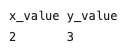

Tutorial: Input and output#
User defined input and output#
This live script will teach you how to control your code to request information and print it clearly to a screen. Make sure you understand the previous tutorial sheets first, as we’ll be assuming you have knowledge of those.
User defined input#
You can request your code to enter a value before it continues to do operations. This is really useful for defining a change of a variable without rewriting the code itself.
To do this you need to use the input() command. The inbuilt function requires a prompt, which is some text, to display on the screen. To display text to the screen you need to put it in quotation marks “example text” or ‘example text’. It then assigns the value you type into the command window to the defined variable, which you can then use later on in your code.
x = input('Type in a number: ')
print(x)
The function input() waits for user input, assigns the user input to the variable x and prints x to the screen.
Text or values - an overview#
One thing in computing that can be hard to understand is the way the computer interprets and displays data you provide it. There are two main types of data you will deal with:
Text based information - ‘strings’.
Numerical based information - ‘integers’ and ‘floats’.
A numerical variable stores a value.
A string variable stores characters.
x = 1 # an integer storing the value of 1
y = 'a' # a string storing a single character a
a = [1,2,3] # a list of integers
b = [1.,2.,3.]# a list of floats
z = 'abd' # a string of characters
As a human you have been taught to see the symbol ‘2’ you assign it also a numerical value of 2. Computers do not do this automatically.
To enter the character 2 as a symbol (string) instead of a value, you use “ or ‘ (speech marks or apostrophes) around it. Python then handles them different. For example:
a = 2 # defines a numerical based value
b = 3*a # works really well
print(b) # prints the value 6
c = '2' # defines a string based value
d = 3*c # multiplies/duplicates the string
print(d) # prints the string '222'
e = 'Hallo'
f = c + e # the operator '+' combines to strings
print(f) # prints the string '2Hallo'
In the first case, the variable is set as a value of 2. Then when you multiple by 3 to get the value of 6.
The second variable c holds a character (symbol) of ‘2’ because of the the quotation marks around it. This now represents the symbol ‘2’, but does not hold its numerical value.
While some mathematical operators can be applied to strings (‘+’ and ‘*’), they are not mathematical operations as seen above.
# Multiplications of 2 strings gives error.
e*c # gives error
# Division and subtraction of strings gives errors as well.
e/c # gives error
e-c # gives error
Printing to the screen#
In the cells above and in previous tutorials we used the print() function to print or display variables, calculations or any other output, we want to see.
print() can display numerical values as well as strings:
print('Hello World') # prints 'Hello World'
print(5) # prints 5
The value 5 is printed in a new line, which you probably expected. However, this is not trivial for a computer. The print() function appends a new line \n at the end. Of course you can change this with the parameter end as well as the separation with the parameter sep (default is one space ‘ ‘).
a = 'Hello World' # defines variable a and assigns the string 'Hello World`
b = 1
print(a, end='') # prints a, but does not appends new line '\n'
print(b) # prints b
print(a,b) # prints multiple variables, values, or strings separated by commas
print(a,b,a,b,sep='\n') # prints separates them by '\n' (new line) instead of spaces.
print('Hallo',5,a,b, sep='Python', end='Having some fun')
Simple way to request a number#
To get the computer to ask you to enter something, you can use the function input(). This allows you to ask for an information entry point, and also allows text on the screen to be added to let the user know what it is waiting for. Python will then wait for a response before continuing.
x=input('enter a value: ') # text printed to the screen is in speech marks.
x=x*2 # some calculation
print(x) # prints the results
The results might be not what you expect, because Python treats any input as a string. Depending what you want to do, you need to convert the string into an integer or floating value.
x = input('enter a value: ')
x = int(x) # converts string into integer
x = x*2
print(x)
y = float(input('enter a value: ')) # converts string into a floating value in one line
y = y*2
print(y)
Note: Letters cannot be converted into numerical values and you will receive an error message while you can convert numnber values to a string.
print('Integer: ' + str(1)) # Converts the integer 1 to a string and add it to the string 'Integer: '.
print('Float: ' + str(1/7)) # converts the fraction 1/7 into a string and add it to the string 'Float: '.
TASK 1#
In the code below, ask the user to enter a value to a variable called MySquare. Then calculate the square of the number.
Test it with the value of 6, and your code should print to the screen 36.
Now write a code that requests two different values. Get the code to add the two values together and print the result.
The code will then ask for a third value, which it will multiple the answer by and display that to the screen.
Use separate input commands.
TASK 2#
Write a code that asks the user to enter their first name, last name and age. Use three separate input commands.
Print their name and age on the screen. Get the code to calculate their age in month and print it.
Formatting output#
Above we formatted outputs with the parameters sep and end of the print() function, but you can format the string, too.
For example, many times you need to format the output to make it look nice. To do this you need to add a special instruction to Python controlling the display. These start with a \ sign. There are two main ones:
new line:
\ntab:
\t
print('onetwothree') # no formatting
print('one\ntwo\nthree') # a key one - creating a new line with \n
print('one\ttwo\tthree') # adding a tab between words using \t
TASK 3#
Create the following output using \n and \t signs:

To format your output, the function .format() or f'' and curly braces {} are used where {} are placeholders for substituting values into a string. .format() is more flexible and provides more options, but in most cases f'' will be just fine, too.
print('My name is {} and I am {} years old.'.format('Isaac',382)) # Inputs can be numbers or strings. The number of {} must match the number of inputs.
print('My name is {1} and I am {0} years old.'.format('Isaac',382)) # You can define the order, but remember Python starts counting from 0.
name = 'Albert'
age = '146'
print('My name is {} and I am {} years old.'.format(name,age)) # You can use variables as well.
print(f'My name is {name} and I am {age} years old.') # Using f'' instead of .format().
Formatting numbers and precison in displaying values#
If you deal with numerical values, you may want to display your answer to a certain precision or combine values and some text in some way. In this case you format the number to a string with the .format() function or f''.
print('{:.4f}'.format(0.123456)) # rounds and formats the number to 4dp.
print('{:.0f}'.format(0.123456)) # rounds and formats the number to an integer.
print('Float: {:.4f} and Integer: {:.0f}'.format(0.1234567, 1.7)) # or 2 numbers together with some text.
print('Float: {1:.4f} and Integer: {0:.0f}'.format(0.1234567, 1.7)) # Define order.
print(f'Float: {0.123456:.4f} and Integer: {1.7:.0f}') # Using f'' instead of .format().
Input after : tells python how to format the number:
f: the number is formated it into a floating number.eorE: the number is formated to its exponational form using ‘e’ or ‘E’ (1e-5 or 1E-5).Integer after the
.: number of dps.Integer before the
.: the string is a minimum number of characters wide (leading spaces, if required).
print('Float: {:.2f} and Integer: {:.0f}'.format(1234.567, 1.7))
print('Float: {:.2f} and Integer: {:.0f}'.format(12345.67, 17)) # Not aligned output.
print('Float: {:8.2f} and Integer: {:2.0f}'.format(1234.567, 1.7))
print('Float: {:8.2f} and Integer: {:2.0f}'.format(12345.67, 17)) # Aligned output.
Task 4#
Define 2 variables a and b with the values 12345e100 and 12.345, respectively. Use f'' and the exponential form e or E with 2 dps. Display in the first line a and b and in the next line b and a, so that numbers are aligned.
Other controls#
There are a number of other formatting controls you can add to the flags. Here are a few:
print('{:+10.2f}'.format(1.234)) # + symbol adds + if positive
print('{:+10.2f}'.format(-1.234)) # + symbol adds - if negative
print(f'{1.234:-10.2E}') # - symbol adds no + if positive
print(f'{-1.234:-10.2e}') # - symbol adds - if negative
print('How to print {{') # how to print a { symbol
print('How to print }}') # how to print a } symbol
print('How to print \\') # how to print a \ symbol
print('How to print " ') # how to print a " symbol
print("How to print ' ") # how to print a ' symbol, note the change in defining the string "" or ''.
TASK 5#
If an object moves 134m in 12s, print the speed in exponential and floating form with 1dp. Which format do you prefer?
TASK 6#
Write a code that asks the user for two numbers. The code will print both of then input values to the screen. On seperate lines, it will print the sum in exponent form with no dps, 1 dp and 2 dps.